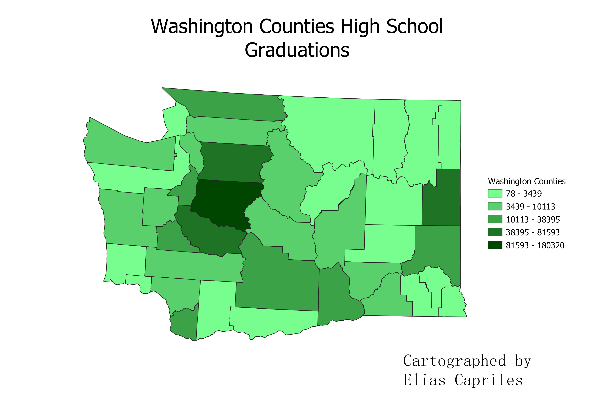

Georenfereced Map of UNC in 1993
This choropleth is based around hghschool graduation rates in Washington state. The target age range for this map is 18 - 24 years of age
This data was aquired through the Census Data website.

Geojson Vector file
This was the data used for the join